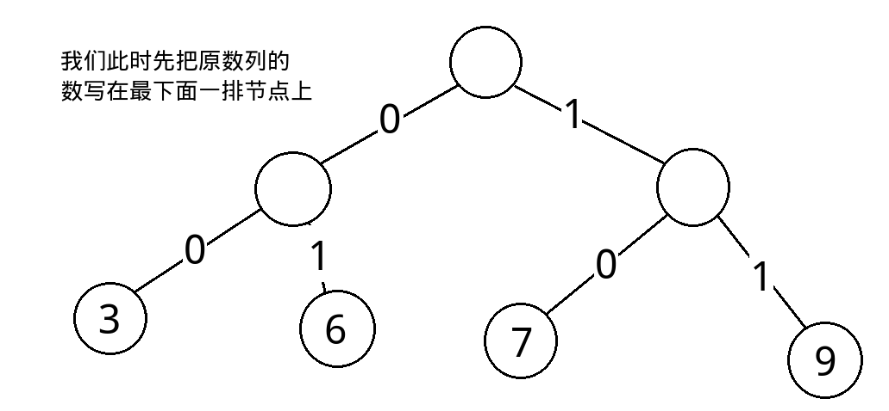
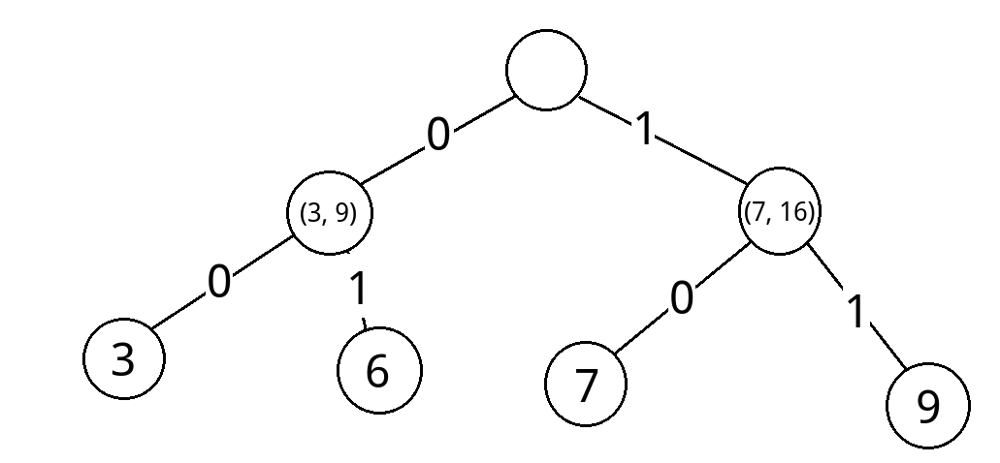
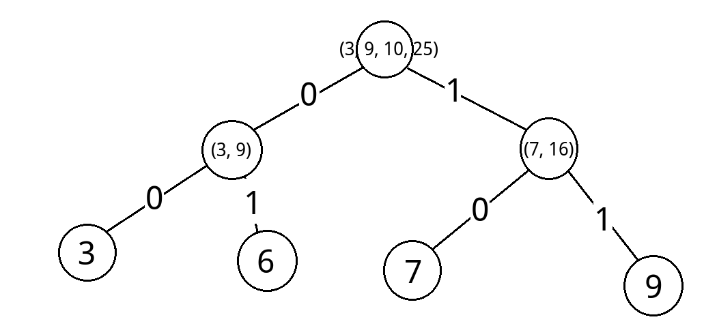

目录
引言
最近集中攻略了一下数学内容，感觉对FFT,NTT,FWT这三种变换有了新的理解与感受，所以用这篇文章来分享最近新的收获
那么还是按照标题的顺序逐个予以讲解
快速傅里叶变换(FFT)
总述
这种变化十分重要，不仅仅是在信息学竞赛上，这个算法曾被称为二十世纪最伟大的发明之一，由此，它的重要性可见一斑。下面，我们就要解开这个算法的神秘面纱，考虑到它的难度，本文讲解着力于使概念清晰易懂（当然，前提是你已经熟练掌握了前置技能，因为如果再加上前置技能的讲解，本文的篇幅就太长了），深入浅出，避免知其然而不知其所以然的常见学习问题，那么，这就开始吧！
前置技能
高中数学的复数相关知识以及基础的线性代数知识（矩阵运算及逆矩阵）
讲解
我们采用这样的记号：$\xi_k^i$，来表示$n$次单位根的$k$次方，其中$\xi_k^0 = 1$
那么，大家应该都学过复数（就是没学过是不是也听说过一些呢），复数里面的单位根有些比较优美的性质，就是这两个：
- 应该是挺显然的，放在复平面上一眼就看得出来
然后，我们需要知道的是，原本DFT的时间复杂度是$O(n ^ 2)$的，就是采用$O(n)$个不同的点($x$值)，代入到多项式中，求出点值，这样就是离散傅里叶变换，就是把多项式从系数表达转向点值表达的过程
那么，FFT是如何做到在$O(n \log n)$时间内就求出$O(n)$个点的点值的呢？原因就在于，它利用了复数单位根的性质，而且必须是一个$2$的整数次幂的单位根，才能很好地实现快速运算
具体的实现方法，很显然就是要使用上面刚介绍过的两个性质，我们可以考虑这样的计算式:
我们此时把某个单位根代入，则有:
由单位根的定义及运算，我们可以得到：
这时，我们进行蝴蝶操作，同时结合上面提到的第二条性质，可以得到：
我们观察式子的这两个部分。可以发现，左右两部分就是与原问题本质相同，但规模仅为原问题一半的递归子问题（因为相当于对左右两部分分别代入了$\xi_{\frac{n}{2}}^{k}$继续进行计算），这样我们就可以通过递归来进行求解
但是，如果你在计算的时候，是把每一个点都这样直接代入计算的话，复杂度并没有什么变化，仍然是$O(n^2)$，还会因为递归而变慢，显然FFT不是这样处理的
那么我们该怎么办呢？我们考虑同时计算这$O(n)$个点的点值，在合并的时候，少计算一些点，利用性质直接运算得出某个点的点值，这样不就可以节约很多的时间了吗？我们继续考虑上面的式子，假设递归返回到这一步的时候（注意，如果这样说的话那么式子中的$n$就不一定是原序列的长度了，而有可能是它的子序列的长度），对于上个式子中的两个部分，我们已经分别求出了$\xi_\frac{n}{2}^{ik}(i = 0,1,2,\cdots ,\frac{n - 2}{2})$这些点对应的点值，那么，我们要思考的就是如何把这些点值在这一层合并在一起
我们可以发现，对于$k = 0,1,2,\cdots ,\frac{n - 2}{2}$，我们只需要直接合并就可以了（$左 +\xi_n ^ k * 右$）
而对于$k = \frac{n}{2},\frac{n}{2} + 1,\frac{n}{2} + 2,\cdots , n - 1$，在左右两边已经求出的点值的点集中，似乎并没有，这应该很显然，左右只有$\frac{n}{2}$个点的点值
那么我们该怎么办呢？考虑上面的两个性质中的第一条，可以知道对于$k = \frac{n}{2},\frac{n}{2} + 1,\frac{n}{2} + 2,\cdots , n - 1$，有$\xi_{n}^{k}= -{\xi_{n}^{k - \frac{n}{2}}}$，这样，我们只要在右边添一个负号，就可以像上面一样直接合并了，因为此时$k$相当于被限定在了$0,1,2,\cdots ,\frac{n - 2}{2}$这个范围中，而左右两边式子里面的指数都是偶数，所以负号就被和谐掉了，只有外边单独提出来的那个单位根$\xi_n^k$产生了一个负号，所以在右边直接添上即可直接合并（$左 -{\xi_{n}^{k - \frac{n}{2}}} * 右$）
这样，我们每次需要$O(n)$的时间进行合并，一共只会进行$O(\log n)$次这样的合并，所以复杂度为$O(n \log n)$
那么我们现在就是以很高的效率求出了点值，对于多项式卷积，我们就可以对每个点都对应地进行两个点值的相乘，得到了新的点值表达的多项式，然而我们并不喜欢点值表达的多项式，所以我们需要IDFT，即逆离散傅里叶变换，当然，你要是暴力求的话，就是高斯消元解方程的复杂度，前面的工作就都变得毫无意义了，很明显，我们需要$O(n \log n)$复杂度的逆算法，即IFFT，逆快速傅里叶变换
怎么做呢？我们考虑刚才都做了什么，我们先构造一个系数矩阵：
然后我们做的事情可以用下面的式子来表达：
那么，我们现在要做的，就是乘一个逆矩阵，这个逆矩阵即为中间的那一堆复数形成的矩阵的逆矩阵，而这个逆矩阵即为：
我就不说明为什么是这样了，自学线代吧
那么，乘上这个矩阵后，上面的式子就化为：
这样看来，正逆变换的本质也是相同的，我们更深入的观察，这就是一个反演的优美例子，所以FFT大概就是这些内容，有没有理解呢？
（其实非常简单，理解起来应该几乎没有任何难度吧。。。）当然，前提是文章写的好
下面提供一份代码，为了增进理解，在代码中的关键部分都标出了上面讲解在代码中的对应部分：
模板
|
|
数论快速变换(NTT)
前置技能
初等数论（原根相关理论）
讲解
其实和FFT是完全相同的，可以说毫无差别。。。只是把复数体系换为了数论上的原根体系，而且那两个重要的性质仍然成立
所以这需要取模的数必须形如$k * 2^\alpha + 1$，其中$k$与$\alpha$均为整数，且$k$为奇数，这样结合费马小定理与原根理论就可以和复数体系完全对应，推导过程也完全相同，故本处不再赘述
简单介绍一下原根？凑凑篇幅
就是对于一个数$\xi$，如果最小的满足$\xi^k \equiv 1$（在模$P$意义下）的$k$等于$p-1$，那么这个数$\xi$就被称为模$P$意义下的原根
怎么样，是不是很绕啊，那个$P$就是上文提到的，形如$k * 2^\alpha + 1$的质数，它是作为模数出现的
这样的话，仔细想想应该就能发现它和复数体系的本质相同之处了
模板
留坑待补。。。
快速沃尔什变换(FWT)
总述
虽然这几个变换都有着相同的前缀和后缀，但是FWT的思想与前面两个并不相同，我们需要立足于位运算的本身特性来理解FWT，相对于FFT来说，FFT求的是多项式的卷积，而FWT则是位运算卷积，前面的多项式的点值求法应该很好理解，但是到了FWT，我们就要稍稍动一下脑筋了（虽然它们的处理过程是相同的，都是先转为点值表达，然后相乘，再由点值表达转回系数表达），与其说这是点值表达，不如说成是将两个数列中有相同特征的元素，聚到符合条件的下标$i$上，形成许多元素的集合，然后我们对应地把相同下标下的两个不同集合的元素做乘积（两个不同集合，指的是一个集合的元素来自于数列${a_i}$，另一个来源于数列${b_i}$），然后再把新的元素集合中的元素回归到新数列$${c_i}$中（此处如果看不懂可以跳过）
基本概念
- 对应位置：指在当前的合并过程中，左半部分与右半部分相对各自的起始位置距离相同的位置
- 当前位：指当前正在合并的二进制位（注意，当前被合并的子树中还不存在当前位）
- 操作法则：指合并过程中的左右转移情况
对于其他的概念，可能不是很常用，如果遇到可联系上下文进行体会
讲解
我们考虑这样的一个问题：
给定两个数列${a_i}$与${b_i}$，我们现在要求一个数列${c_i}$，它的计算方式如下：
其中$\oplus$是任意的一个位运算符
这个问题就是FWT的经典问题，被称作位运算卷积，由于位运算的多样性，我们对位运算进行逐个考虑
与运算和或运算的FWT
根据开头的总述所言，我们现在要做的就是找出这两种位运算的点值表达，下面我们以或运算为例进行讲解：
如果我们求出了两个式子分别的点值表达，我们就需要把对应地它们乘在一起，这说明，对应的两个点值表达里面所包含的元素，如果我们在两个点值表达里面分别任选一个，那么这两个元素的组合一定是合法的组合，换句话说，就是把这两个点值表达看作是二分图，我们如果直接乘起来，相当于把二分图中所有能连的边都连了，而每条连边代表一个卷积项$a_j * b_k$的选择方案，所以这告诉我们，这两部分元素的任意组合都是合法的（根据总述的理解）
那么，提到那么多次的“元素的集合”究竟是什么样子的呢？
我们再考虑一个经典问题：给定一个数列${a_i}$，我们要求数列${b_i}$，计算方式如下：
其中$|$表示或运算
下面讲解求解这类问题的按位合并方法，这个十分重要，在几乎所有的FWT计算中都需要用到，所以请务必理解这样的计算过程
根据位运算的位独立性，我们递归地考虑问题，假设我们现在从最低位开始，类比FFT的计算过程，就是这个样子的

然后我们考虑按位合并，在兄弟结点之间，左边的表示当前位为0，右边的表示当前位为1，那么，如何合并呢？我们定义一下结点表示什么，在当前层未进行合并时，结点上的数表示已经从自己的子树中拥有的所有$a_j$合并出来了答案，即从里面筛选出来了满足$(j|i)=i$的$j$，并把这样的$a_j$的值加入到了结点表示的答案中所得到的最终答案
而在当前层合并完以后，我们就要把这样的值向上传递，他们就不在原来的位置了，而到了新位置后，又成为了当前层未进行合并的结点，所以无需定义当前层的已合并结点
具体的合并方法是什么呢？我们这样想，如果一个$a_j$可以被算到左边结点的答案里，而左边结点当前位又是0，所以$j$的当前位一定是0，那么，我们把它们加到右边结点中，仍然满足$(j|i)=i$的性质，所以我们的合并过程就是，左边不变，把左边对应位置逐个加到右边的对应位置上，而左边显然无法继续添加上什么了
注意，每个结点不止表示一个$b_i$，而是表示许多这样的$b_i$，且同一层节点表示的$b_i$数量相同，不同层的不同，且相邻两层表示的数量，上面层是下面层的二倍（因为发生了合并）
于是就变成了这个样子：

我们继续向上合并，可以得到这样的东西：

注意理解对应位置的含义，对应位置这个概念很重要，会用在几乎所有的推导中，在FFT里面忘了说了。。。
这样应该能理解了吧，如果还不懂，就结合讲解与操作过程图相互照应地看即可
这样，根节点只有一个，所以我们不需要再合并了，根节点对应的数列，就是我们想要的数列${b_i}$
我们概括地说，在这个问题中，我们的操作法则为$左=左，右=左+右$，为了方便，我们称这个问题是或运算FWT的求点值过程，简称或FWT
以后，我们对于一个问题，只写出它的操作法则，就不会再详细地重现上面合并的过程了
回到原来的思路上，我们求出了这样的数列${b_i}$，那么它究竟有什么用呢？其实，数列${b_i}$就是我上文所说的“元素的集合”，它相当于有许多个集合，每个集合里面都聚集了一些符合条件($(j|i)=i$)的$a_j$，也就是总述里“将数列中有相同特征的元素，聚到符合条件的下标$i$上，形成许多元素的集合”，仔细想想，是不是这样的？
然后，我们还有一个式子，证明应该很容易，但是想要独立想到。。。
这个命题是充分必要的，证明直接联系或运算定义即可
这样，再回到更远的思路上来，我们在解决或运算FWT，我们分别对给定的两个数列${a_i}$与${b_i}$，像上文一样进行或FWT操作，求出新的数列${a’_i}$与${b’_i}$，然后对应位置直接相乘，这就是总述里面说的“将两个数列中有相同特征的元素，聚到符合条件的下标$i$上，形成许多元素的集合，然后我们对应地把相同下标下的两个不同集合的元素做乘积”
所以，我们相当于得到了一个数列${c’_i}$，即${c_i}$做或FWT的结果，我们要求${c_i}$，那么就要把这个过程逆过来，即总述里面的“把新的元素集合中的元素回归到新数列中”
我们成这个过程为或IFWT（逆FWT），即或运算的求系数过程
那么，现在正变换已经讲完了，逆变换还不会？这里面不需要线性代数的那一套东西，因为我们就是像上文一样的操作的，所以我们直接把操作逆过来即可，操作法则：$左=左，右=右-左$
根据神TM的位运算的位独立性，在IFWT中，我们无论是先递归，再处理当前位，还是反过来都没有关系，因为位与位之间互不影响（其实我觉得不是这样理解的。。。自己用四个数试一试应该就能发现了）
显然你FWT就需要先递归再处理当前位，否则你当前位上什么都没有合并个×啊。。。
那么，这就是或运算FWT的整个过程，思路是不是非常巧妙啊？
对于与运算的FWT，和或运算的完全相同，把所有的或运算符替换为与运算符即可，与FWT操作法则：$左=左+右，右=右$，与IFWT操作法则：$左=左-右，右=右$
异或运算的FWT
为什么要单独把异或拎出来裱呢？因为这种运算和上面的两个不太相同，思考，如果我们还是用与上面完全相同的正变换过程（），就会出现非常尴尬的事，每个元素的集合中只有一个数，且都是相同的$a_0$，这样就毫无意义了
我们需要新的正变换方法，下面的这个构造就非常神奇了：
我们再考虑一个经典问题：给定一个数列${a_i}$，我们要求数列${b_i}$，计算方式如下：
其中$bitcount(x)$表示$x$的二进制表示中1的个数
柿子应该能看懂吧。。。其实就是考虑$bitcount$的奇偶性。。。
我们还是像上文那样进行合并操作，考虑当前位，这时所有左结点的子树中的$j$和$i$的当前位都是0，右结点的子树中的$j$和$i$的当前位都是1，那么，右边的$j$，如果搞到左边，那么它的$bitcount$不变（$1\&0= 0 $)，奇偶性也不变，左边的到右边，显然它的$bitcount$也不会改变（$0\&1= 0$) ， 奇偶性不变，而对于留守在左结点中的那些$j$来说，它们加上当前位以后没有变化（$0\&0=0$）， 因为当前位为$0$，而对于右边的留守的$j$，它们的当前位是1，而$i$的当前位也是1,所以它们的$bitcount$会加一，奇偶性也随之改变，所以只有右边的留守$j$需要添加一个负号，这样的话，操作法则就呼之欲出了：$左=左+右，右=左-右$
注意，这里有一个十分常见的错误，那就是认为右边的$j$搞到左边后需要添加负号，这又是怎么理解的呢？这种错误是当前位概念不清楚导致的，当前位此时还并没有添加到$i$和$j$上，在讨论左右的转移情况时不能连带着当前位一起考虑，只有当合并完以后，合并到父亲结点了，那么这个父亲结点的子树中的$i$与$j$才具有刚才的“当前位”
不明白吗？你一定是在逗我
这样，我们就成功地搞出了异或FWT，求完后两个做完异或FWT的数列直接乘起来，再逆回去，逆的过程很显然，就是解二元一次满秩方程解回去，操作法则：$左=\frac{左+右}{2}，右=\frac{左-右}{2}$
所以到这里，异或FWT的全部过程也搞完了。。。等等，为什么可以直接相乘呢？
我们考虑相乘的时候，发生了什么，首先我们需要一个小定理：
这个应该还是很显然的，只要考虑$i$中的二进制位就可以了
下面我们进行证明：
因为数学公式太大写不下，所以先在前面预定义一下
- 那么推导过程就是这样的：所以，我们就可以直接相乘求得${c_i}$的异或FWT，只要逆回去就可以了，上面已经提到
当然，上面的全部推导过程换成或运算来完成也是可以的，但并不是完全一样，有兴趣可以自行推导
注意，不要只看到异或FWT的推导过程，这里面隐藏着一个重要考点，我们考虑一下这个问题：
给定一个数列${a_i}$，我们要求数列${b_i}$，计算方式如下：
其中$bitcount(x)$表示$x$的二进制表示中1的个数
我们发现，要求的，就是一些$j$，满足将$i$中是1的位置在这样的$j$之中去除后，$j$中的1的个数为偶数，然后把这样的$j$对应的$a_j$累加进$b_i$即可
那么，这个东西该怎么求呢？考虑到如果我们也将$i$中的1的情况包含在内，情况会比较复杂，$j$中1的个数的奇偶性无法确定，因为有$i$的影响，所以我们想要去除$i$的影响，我们就把$i$取反，得到$i’$，那么我们要求的就是一些$j$，满足${(bitcount(j\&i’)\&1)=0}$，而这正是我们做异或FWT时得到的结果的一部分（的前半部分），所以此时我们需要求出，而这个就十分地显然了，因为一个数必定满足这两个部分的其中一个，所以这个式子就等于所有$a_j$的和，我们把它加到做完异或FWT的结果上，除以二，再考虑取反操作，把序列反转，得到的序列就是$b_j$了，这题让我们解密，那么我们就逆着上述过程跑一边就可以了
这题很好，考察的点十分隐蔽，要求我们对知识的掌握必须全面细致，而且本题也反映了一个常见思路，我们要破译由位运算组成的公式加密而成的数列，最好搞清楚它加密的操作过程，细化到操作法则，最后对于破译只需要逆过来就可以了，是一种正难则反，执果索因的思维过程（当然，是站在破译的角度说的，因为直接破译太困难，我们就先搞清它的加密过程）
模板
留坑待补。。。其实很好写的，懒得写了